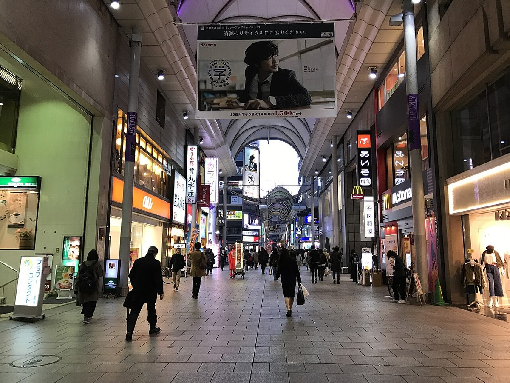
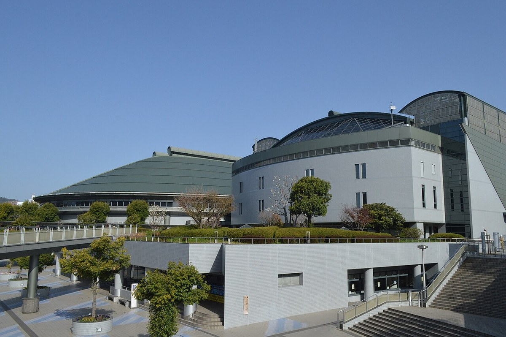

1
9:30
出発
Hotel HAGOROMO（中区羽衣町6-5）203号室
2日目のスタートはホテルから。ゆりっぺは前夜に金沢から移動し、のぞみ53号で21:02に広島駅へ到着して合流済み。今日のゴールは広島グリーンアリーナのBUMP OF CHICKEN（開場17:00／開演18:00）。9:30に出発して、元安川沿いの川沿い散歩→平和記念公園→平和記念資料館→土橋でランチ→本通り・紙屋町→15:00の物販→開演の流れ。長旅の疲れを考えて遠出はしない日にした。
2
9:30–10:05
川沿い散歩
元安川沿い（ホテル→平和記念公園）
ホテルを出て、元安川沿いを北上。約1.6km・徒歩約20分の道のりを、のんびり30分ほどかけて歩く。川辺の景色を楽しみながら平和記念公園へ。
3
4
10:15–11:40
平和記念資料館
広島平和記念資料館
平和記念公園の中核施設。被爆の実相を伝える展示をじっくり見学する。11:40に出て、原爆ドーム前を通って土橋のランチへ向かう。
昼
5
13:30–14:20
本通り・紙屋町で時間つぶし
紙屋町・本通エリア
ランチのあとは本通り・紙屋町で買い物やカフェ。14:20に出発して、徒歩約1.8km・23分で14:45に広島グリーンアリーナ着。15:00の物販に備える。

6
15:00
物販
広島グリーンアリーナ 物販ブース
物販はLINE「mogily」のデジタル整理券制。使うのはユウキの整理券で、枠は15:00。ゆりっぺの整理券は29日14:00の枠なので今日は使えない。ユウキが入場して購入する形。

14:20に紙屋町を出発、14:45に会場着で15:00の枠に入場。マイバッグ持参（袋の配布なし）。整理券があっても在庫の保証はないので、買うものは優先順位をつけておく。
7
17:00／18:00
開場・開演
広島グリーンアリーナ
開場17:00、開演18:00。最寄りの原爆ドーム前／紙屋町西から徒歩約10分。BUMP OF CHICKENのライブを楽しむ。